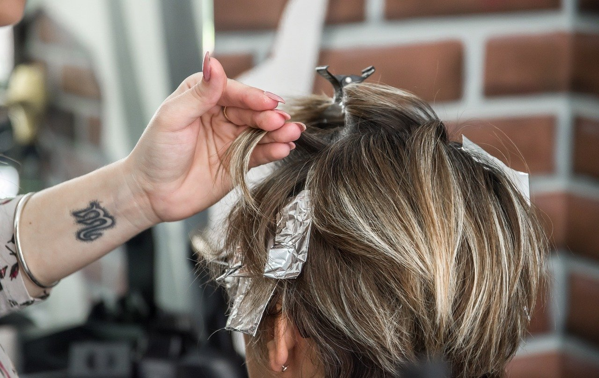
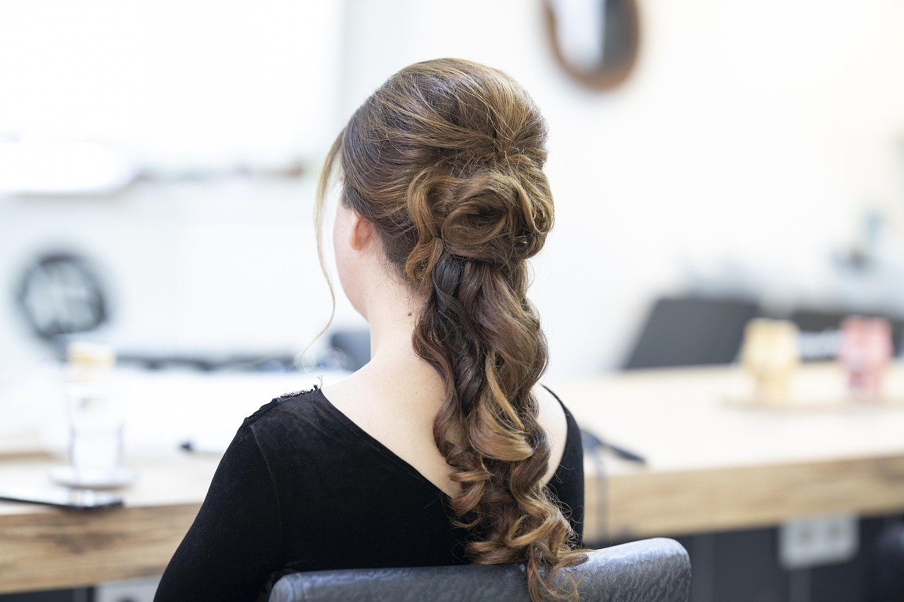
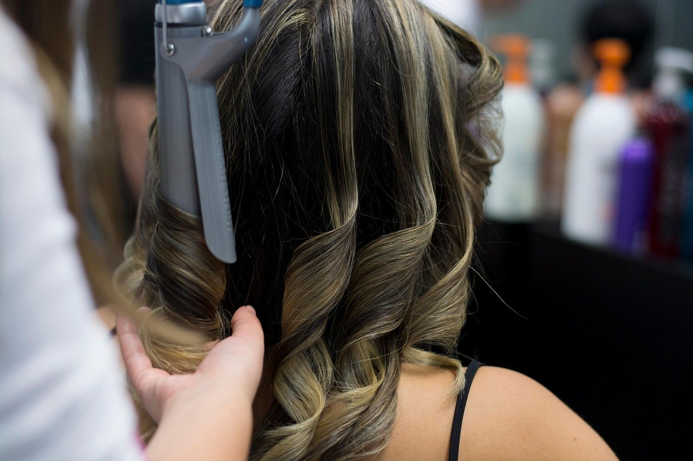

Salon Proba Jarvis
Tuns și coafat cu atenție
Salon de coafură pentru femei și bărbați din Constanța, pe Strada Probei 1.
Despre salon
La Salon Proba Jarvis din Constanța, fiecare tunsoare și coafat sunt adaptate cerințelor fiecărui client.
Aici găsești servicii pentru îngrijirea părului, de la tuns la tratamente. Salonul este potrivit pentru oricine vrea o schimbare de look.
-
Profesioniști
Servicii realizate cu atenție
-
Relaxare
Atmosferă liniștită în salon
-
Oricine
Servicii pentru femei și bărbați
Servicii
Exemple — de completat cu ofertele dvs.
Treci peste un serviciu ca să vezi fotografia lui.
-
Tuns și coafat
Tunsoare aleasă după forma feței și după cât timp vrei s-o porți, apoi coafat pentru ocazia ta.
-
Îngrijire
Pentru părul uscat, obosit sau care nu mai arată sănătos între două tunsori.
-
Tratamente
Tratamente pentru păr, pentru cazurile în care părul are nevoie de mai multă grijă.



Galerie
Apasă pe o fotografie ca să o vezi mai mare.

